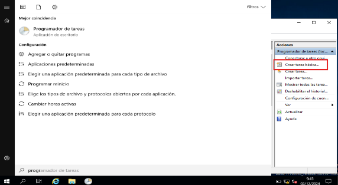
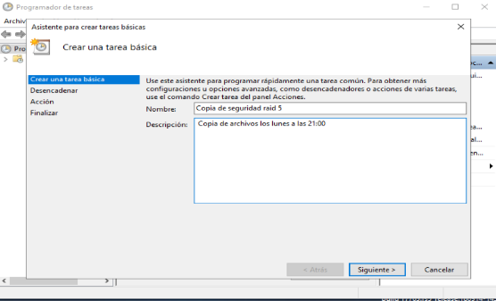
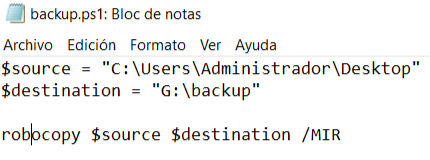
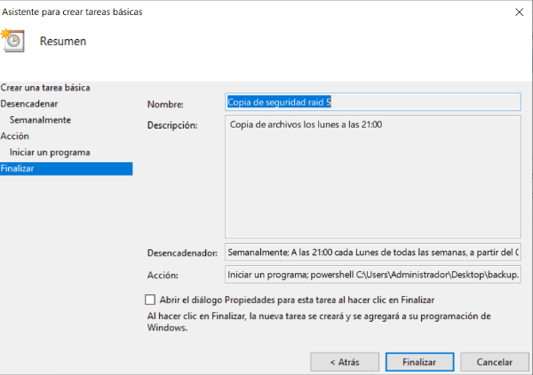

→ [ Beyond ] ←
Copias de seguridad
Creando copias de seguridad automáticas en el RAID 5 en Windows Server 2019
Abrir programador de tareas.
Crear una nueva tarea básica.
Script en PowerShell para copias de seguridad.
Revisar y finalizar tarea.
